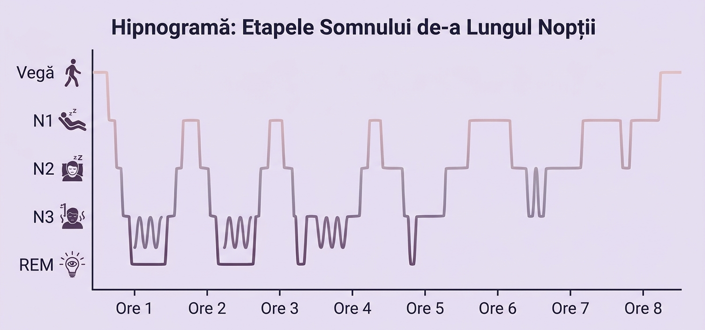
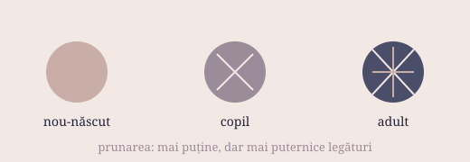

Exercițiu de atenție, în trei pași
Apasă Space și numără în liniște respirațiile până la zece; dacă te rătăcești, reia de la unu. Pentru ritm, poți folosi metronomul din playerul de mai jos; o bătaie, o respirație.
PSIHOLOGIA UMANĂ · GHID · PAGINA 2 DIN 4
Percepție, memorie, emoții, somn: ce spune cercetarea și cum o poți verifica singur.

Percepția nu este o fotografie a lumii: creierul construiește imaginea, completând parțile din experiența trecută. De aceea doi oameni pot privi același eveniment și pot povesti două scene diferite. Atenția decide ce intră în scenă: funcționează reflex, dar poate fi antrenată.

<picture> și <source>.
În fișa de laborator, cifrele studiului se scriu astfel: M = 75, σ = 12,
unde σ notează abaterea standard. Când studiezi, apasă Ctrl + S
pentru a salva și, mai important, reia materialul mâine: repetiția spațiată este
linia violeta din graficul de mai sus. Un plan spațiat
dublează retenția față de o singură lectură.
Memoria are trei etape: codarea, stocarea și reactualizarea. Uitarea nu este un defect,
ci un filtru: creierul păstrează ce e folosit. Formula din introducere, R(t) = e-t/s,
devine practică dacă lucrezi cu repetiție: citire, pauză, invocare.
| Măsurătoarea | Rezultat | Ce poți face |
|---|---|---|
| Reactualizare la 1 zi | ~33% | Repetă mâine, apoi peste o săptămână și peste o lună: difuzarea repetițiilor menține curba sus, ca linia violetă. |
| Reactualizare la 7 zile | ~21% | |
| Reactualizare la 31 zile | ~21% | Folosirea curentă a informației îngheață uzura naturală. |
Surse: curbele grafice sunt modelate pe datele clasice ale lui Ebbinghaus (1885).
O emoție este un răspuns scurt, intens, cu declanșator clar; dispoziția e mai lungă, dar mai slabă, iar temperamentul este stabil de la naștere. Cercetarea vorbește despre emoții de bază: bucurie, întristare, frică, mânie, mirare, dezgust.

Exercițiul de respirație ajută la calmarea fricii; găsești videoclipul pe pagina multimedia, iar sunetul de relaxare la secțiunea audio. Un cuvânt-cheie pentru emoții: denumește a da unui sentiment un nume îi reduce intensitatea.

Adulții au nevoie de 7-9 ore. N1 și N2 sunt fazele de tranziție; N3 este somnul profund;
REM (REM - Rapid Eye Movement) este etapa viselor și
cea în care se consolidează învățarea emoțională. Dacă te trezești noaptea,
nu te grăbi: somnul revine în cicli.
Un cuvânt-cheie: ritmul -
aceeași oră de culcare, incluzând weekendul.
Apasă Space și numără în liniște respirațiile până la zece; dacă te rătăcești, reia de la unu. Pentru ritm, poți folosi metronomul din playerul de mai jos; o bătaie, o respirație.
Creierul se schimbă pe măsură ce creștem. În copilărie se formează numeroase conexiuni între neuroni. Unele se întăresc prin folosire, iar altele se reduc prin prunare sinaptică.
